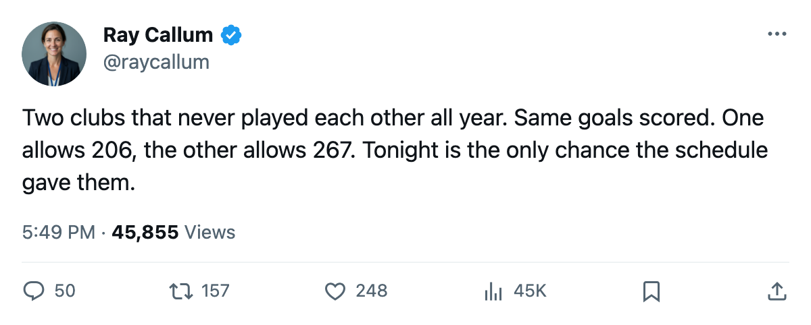

Notes from the West: Nashville and Philadelphia meet once tonight, and the defense is everything
The Predators scored 240 all year. The Flyers scored 241. Nashville allowed 206. Philadelphia allowed 267.
 Ray CallumSenior correspondent · Home Ice Network
Ray CallumSenior correspondent · Home Ice Network
 Nashville Predators and
Nashville Predators and  Philadelphia Flyers meet for the first time tonight in Nashville, and the only time. Different conferences, different divisions, and the schedule kept them apart for 75 games.
Philadelphia Flyers meet for the first time tonight in Nashville, and the only time. Different conferences, different divisions, and the schedule kept them apart for 75 games.
The table says: Nashville has 41 wins, the most in the Western Conference. Philadelphia has 23 wins, the second-fewest in the Eastern Conference. Nashville is 26-12 at home. Philadelphia is 11-26 on the road. The Flyers score 241 goals in 74 games and surrender 267. Nashville scores 240 in 75 and allows 206.
The volume is the same. The crease is not.
Both teams score roughly the same number: 241 against 240, a single goal across a full season. The gap is what gets put behind them. Nashville has the 3rd-best goals-against total in the Western Conference at 206. Philadelphia has 267, second-worst in the Eastern Conference.
Nashville has 2 players on the injured list:  Greg Johnson81 (knee, return March 27) and Vernon Fiddler75 (groin, return May 12). Philadelphia has Dennis Seidenberg78 (foot, out until June 3). Nashville gets Johnson back within 2 days. Seidenberg will not play another game this season.
Greg Johnson81 (knee, return March 27) and Vernon Fiddler75 (groin, return May 12). Philadelphia has Dennis Seidenberg78 (foot, out until June 3). Nashville gets Johnson back within 2 days. Seidenberg will not play another game this season.
The Flyers won 5-4 in overtime at New York on March 22. The Predators beat Edmonton 2-1 on the road on March 23. Both come in on a 1-game win streak. Nashville has 7 games left and a ceiling of 112 points. Philadelphia has 8 games left and a ceiling of 87, which cannot reach 8th-place New York at 79.
 Tomas Vokoun90 has started 59 of Nashville's 75 games. Philadelphia has used
Tomas Vokoun90 has started 59 of Nashville's 75 games. Philadelphia has used  Robert Esche77 in 22 of 74 and
Robert Esche77 in 22 of 74 and  Neil Little74 in 5, a crease neither man owns.
Neil Little74 in 5, a crease neither man owns.
What 3rd place is worth
Nashville sits 3rd in the Western Conference at 98 points, 2 ahead of Edmonton. The Predators have 7 games left. A sweep puts them at 112, tied with the most Dallas can still reach. A collapse puts them behind Edmonton, who has 6 games left and a ceiling of 108. The gap between 3rd and 4th is tonight's game, Atlanta on March 29, and Detroit on March 31.
